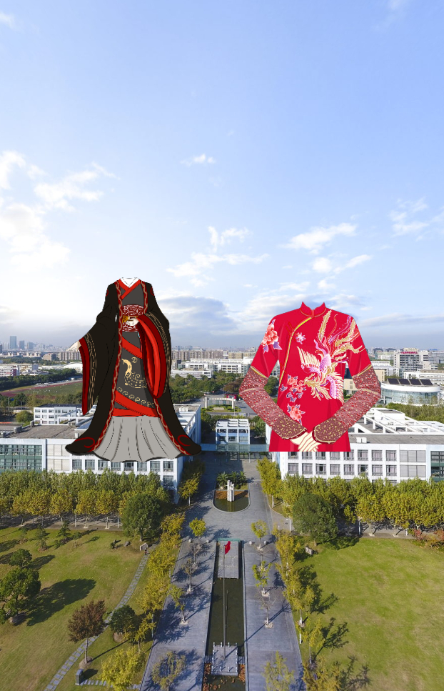

原图
复古
胶卷
饱和
怀旧
透明
阳光
傍晚
黑白
浮雕
水墨
说明
可参考以下
https://www.jb51.net/article/104759.htm
https://blog.csdn.net/hgyu_962464/article/details/54893314
https://blog.csdn.net/qq3401247010/article/details/78122558
http://www.th7.cn/web/html-css/201310/14157.shtml
https://blog.csdn.net/fgdfgasd/article/details/52024368
https://fellipe.com/demos/lena-js/ http://camanjs.com/ http://www.17sucai.com/pins/demo-show?id=20593